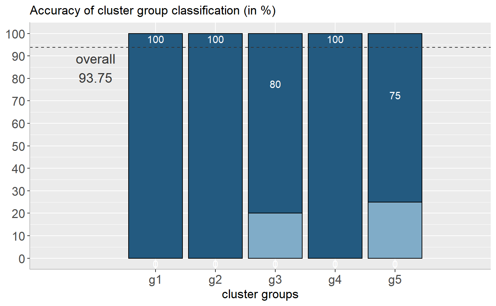

sjc.grpdisc.RdComputes linear discriminant analysis on classified cluster groups. This function plots a bar graph indicating the goodness of classification for each group.
sjc.grpdisc(data, groups, groupcount, clss.fit = TRUE)
| data | A data frame with variables that should be used for the cluster analysis. |
|---|---|
| groups | group classification of the cluster analysis that was returned
from the |
| groupcount | amount of groups (clusters) that should be used. Use
|
| clss.fit | logical, if |
(Invisibly) returns an object with
data: the used data frame for plotting,
plot: the ggplot object,
accuracy: a vector with the accuracy of classification for each group,
total.accuracy: the total accuracy of group classification.
# retrieve group classification from hierarchical cluster analysis # on the mtcars data set (5 groups) groups <- sjc.cluster(mtcars, 5) # plot goodness of group classificatoin sjc.grpdisc(mtcars, groups, 5)